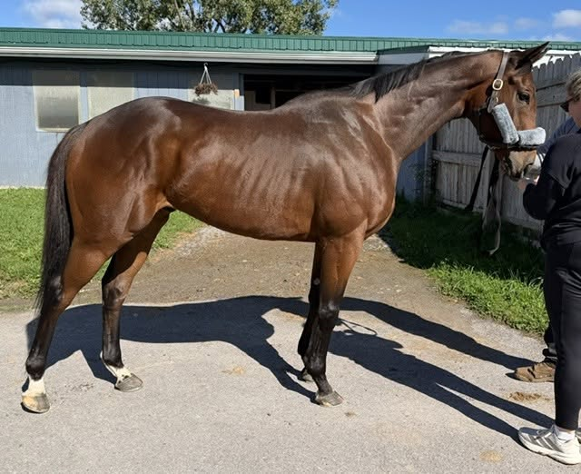
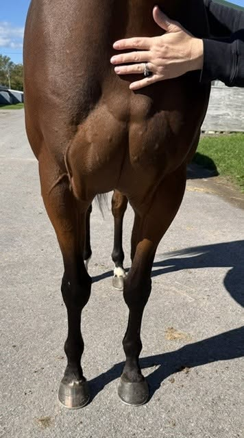
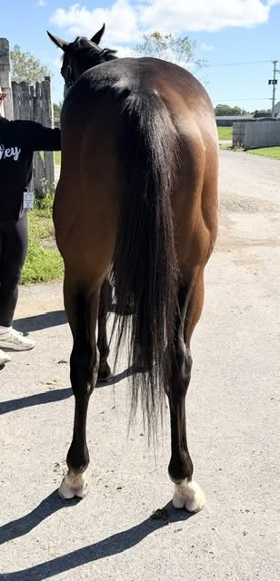
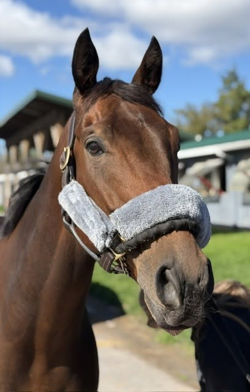
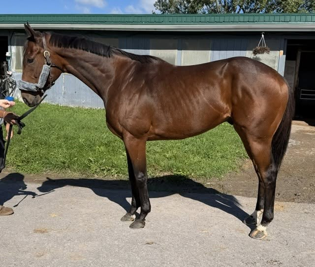
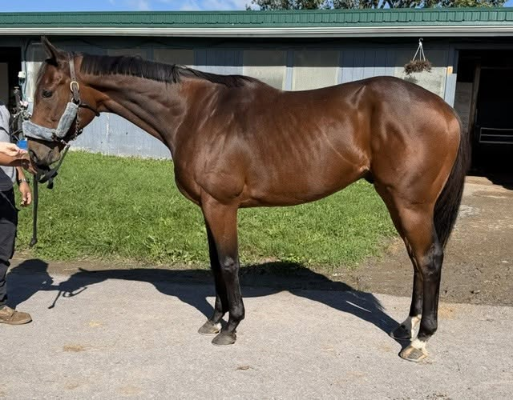

JOHN THE BAPTIST, 2021, 15.3 bay gelding
PLACED
Located at the Finger Lakes Race Track in Farmington, NY (near Rochester, NY).
This very personable boy can be described as “well-bred, well-handled, and very much well-loved”. At the track, he seems to be lavished with personal attention and is thriving- from his shiny coat to his quiet, happy manners. A completely classy young gentleman. His trainer had nothing but superlatives about him, describing him with much affection, “the bestest boy, so nice, the best”. We were told that he can hop on him bareback and walk around without a care. He’s good and easy in his stall and even loves having kids visit him. His only quirk? He loves eating pears and can be quite messy when he does!
We observed a sweet, snuggly, polite and curious horse- a friendly, chill nugget. We liked his compact muscular and balanced build with great feet and bone. We think he’d be a quite versatile prospect, game and willing for anything that you might want to try.
For his video, he walked quietly on a loose lead and stayed just as relaxed at a jog, attentively adjusting to his handler’s pace. As we finished up our visit, he contentedly grazed on the lawn while we chatted. His handler explained that although he still “loves working, just not racing anymore”. His long-time jockeys have said that he’s only got one speed and no longer notches it up coming home. Because his heart is no longer in being a racehorse, his connections want to find this much-loved boy a new career where he can excel and be someone’s “bestest-boy” forever.
John the Baptist is by More than Ready and out of Angel Star, a Dark Angel mare. This is an exceptional sport horse pedigree. More Than Ready, from the Halo sire line, has sired many horses who have succeeded at upper level eventing, as well as in the hunter and jumper rings, and his offspring have also had notable dressage success. His dam, who has Giant's Causeway and Alleged in her pedigree, sold for over $500,000 as a yearling, and comes from a female family that has produced many European stakes winners. John the Baptist was bred by one of the leading TB breeders in the world, and while his breeder's hopes that he might find racing success were not realized, we think he has a very bright future as a sport horse!
Contact: Angel Montanez (585) 750-3073
Price: $3,000 neg
Please note that references will be required and checked prior to being able to purchase this horse. Please see our post pinned to the top of our FB page for more information.
A PPE is always recommended. For information about vet practices available to do PPEs, and other important information about the buying process, please see the How to Buy page.






Last updated: 10/26/26